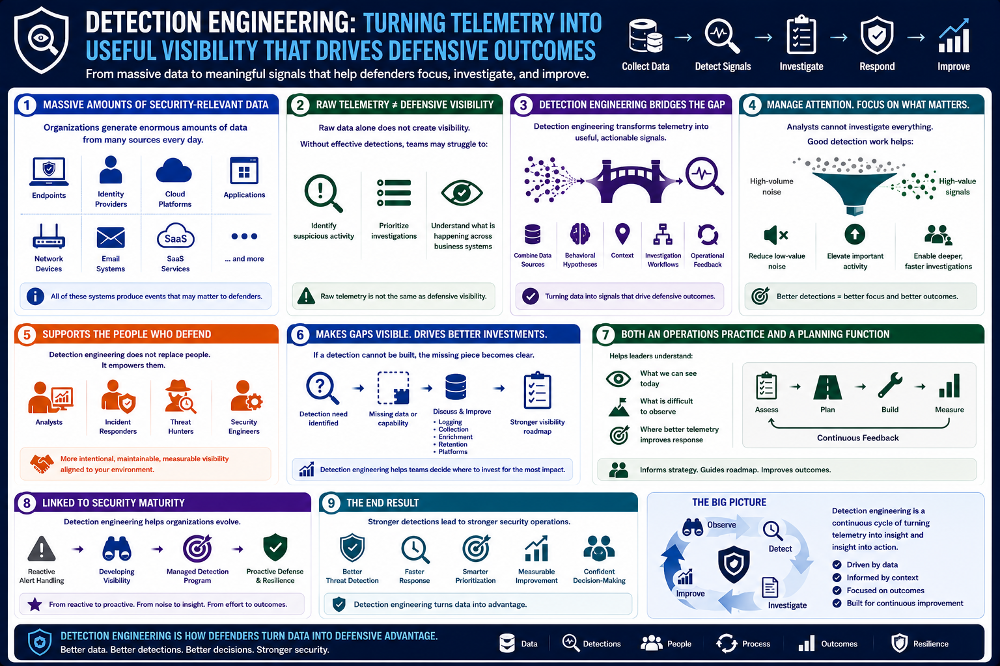

What Is Detection Engineering?
Why Detection Engineering Exists
Connecting to LMS... Progress: in progress
Version 1.0 | Date: 2026-06-16 | Educational overview of defensive detection engineering concepts.

Narration
Organizations generate enormous amounts of security-relevant data. Endpoint tools, identity providers, cloud platforms, applications, network devices, email systems, and SaaS services all produce events that may matter to defenders.
Raw telemetry is not the same as defensive visibility. Without effective detections, security teams may struggle to identify suspicious activity, prioritize investigations, or understand what is happening across business systems.
Detection engineering exists to bridge that gap. It transforms security telemetry into useful signals by combining data sources, behavioral hypotheses, context, investigation workflows, and operational feedback.
The discipline also helps organizations manage attention. Analysts cannot investigate every event with equal depth. Good detection work helps reduce low-value noise while elevating activity that deserves a closer look.
Detection engineering does not remove the need for analysts, incident responders, threat hunters, or security engineers. It supports them by making visibility more intentional, maintainable, measurable, and aligned with the organization's actual environment.
It also helps teams decide where to invest. If a detection cannot be built because the required data is missing, that gap becomes visible. The team can then discuss logging, collection, enrichment, retention, or platform changes as part of a larger visibility roadmap.
In that sense, detection engineering is both a security operations practice and a planning function. It helps leaders understand what the team can see today, what remains difficult to observe, and where better telemetry would improve response.
This is why detection engineering is often tied to security maturity. It helps organizations move from reactive alert handling toward a managed visibility program with priorities, ownership, and a path for improvement.